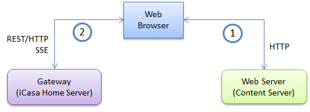
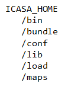

Standard Install
iCasa Simulator is decomposed in two parts:
- Gateway part corresponding to the box runtime (iCasa Home Server) including the simulator module.
- Web server part serving the client web application code (Content Server).
A client using a Web browser access first the Web Server to get the content of web application and then, it access the Gateway to get information about the iCasa execution context and to interact with it.

Installation Prerequesites
- Java Development Toolkit 6 (Avoid Java 7 that may cause troubles).
- A modern Web browser (We recommend to use Firefox but you can also use Chrome, Internet Explorer is not yet supported).
Installation Procedure
- Download a full iCasa Simulator binary distribution (We recommend the icasa.teaching.distribution to start).
- Unzip it on a local folder i.e. the ICASA_HOME directory.
The ICASA_HOME directory should have this structure

In addition four launch scripts are in the root directory: startGateway.bat, startGateway, startGUI.bat and startGUI.
Launch
Web Server Part Launch
- Go to the ICASA_HOME directory.
- Execute startGUI script on Unix systems or startGUI.bat script on Windows systems.
By default, the web server port is set to 9000.
The simulator home page is available at http://localhost:9000/
Gateway Part Launch
- Go to the ICASA_HOME directory.
- Execute startGateway script on Unix systems or startGateway.bat script on Windows systems.
By default, the gateway port is set to 8080.
In this case, the platform url would be http://localhost:8080/.
Advanced Installation
Depending on your needs, you can choose between different installation architectures:
- Gateway part and Web server part on the same machine. (Default installation)
- One instance of Web server part per Gateway part.
- One shared instance of Web server part for several Gateway parts.